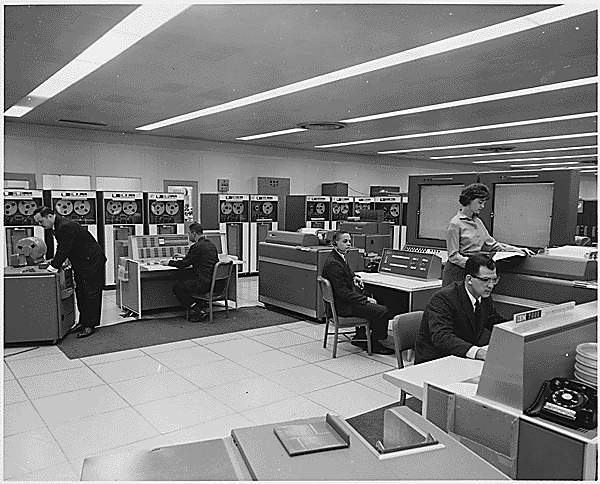
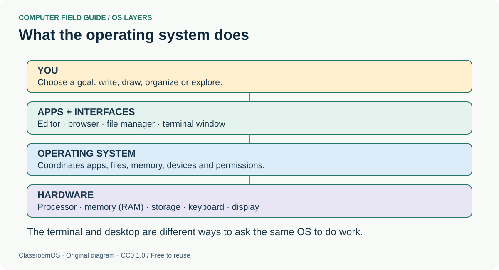
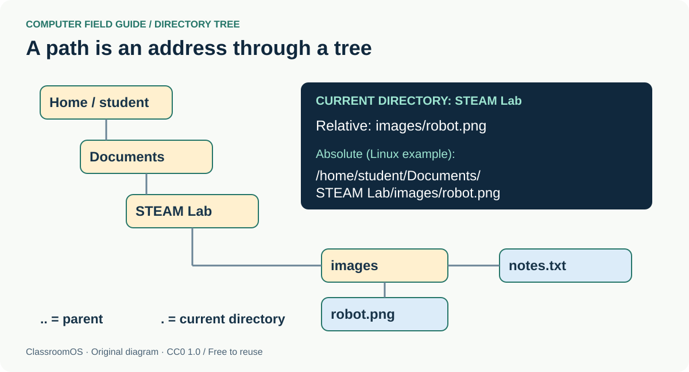
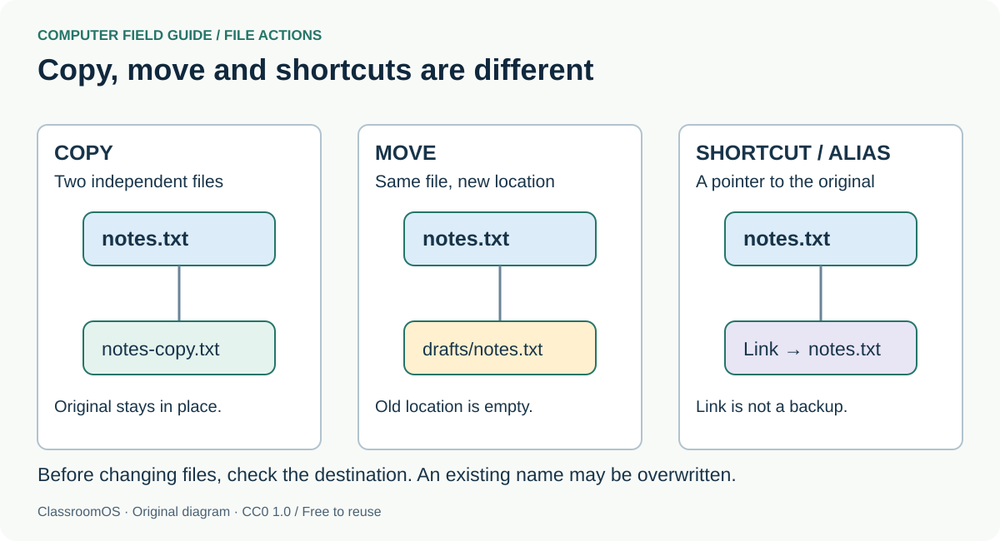
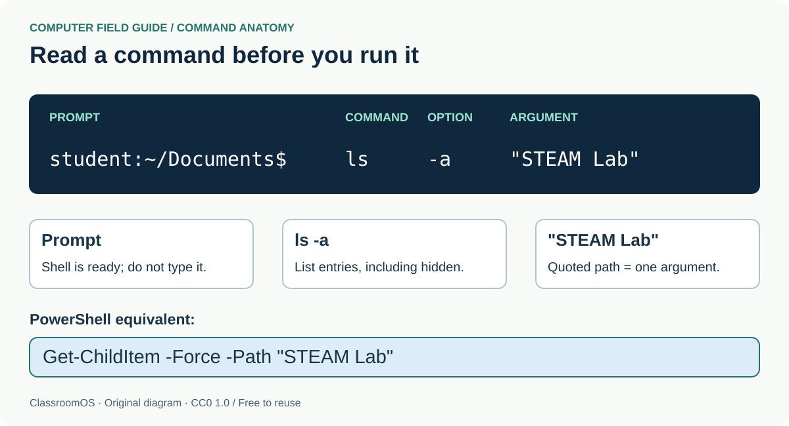
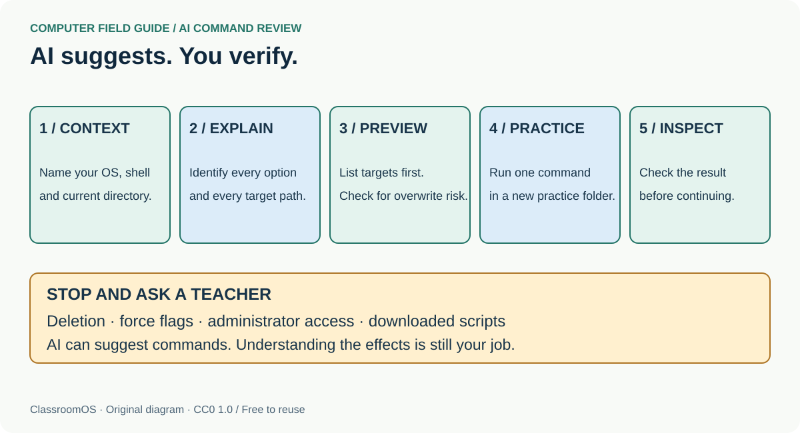

Mac, Windows, Linux: different controls, shared ideas. Learn to organize your work, find your way through directories, and explain a terminal command before you run it.
Grades 6–12 · Three 50-minute sessions · No installation or AI account required
Your goal: Make a clearly organized project, navigate it with both a file manager and a terminal, and use AI as a command explainer. Younger students can work with a partner using the desktop and practice terminal.
PHOTO HISTORY / FROM COMPUTER ROOMS TO PERSONAL DESKTOPS
How did operating systems get here?
Operating systems grew as computers needed to serve more programs, people and devices. These real photographs show people and machines behind that story. Milestone dates describe the history; each caption separately identifies what the photograph actually shows.
Click any photograph to present it full-screen. Use the arrow keys to step through the collection. Some are public domain; others are freely reusable under the Creative Commons license shown.
1960s · Shared machines
When a computer filled a room

Photograph · NASA computer room, around 1962
NASA’s computer room with two IBM 7090s, around 1962. Large shared computers made scheduling, storage and device management essential. Early batch systems queued jobs; time-sharing systems let several people interact with a machine through terminals. This photo shows the hardware and operators, not a particular OS screen.
Ken Thompson (seated) and Dennis Ritchie at Bell Labs in 1973, several years after Unix began in 1969. Unix helped establish the command-oriented working environment behind many tools we still use. Directories, processes and small cooperating programs made text commands powerful. The original archival image is small; enlarging it cannot reveal extra detail.
Photo: Unknown photographer; via the Jargon File and Wikimedia Commons · Source record · Public domain (source record). Unaltered source photograph; original resolution 310 × 201.
Look & discuss: Where is the keyboard? Where might the actual computer be? How does this compare with the practice terminal in this lesson?
The IBM PC model introduced in 1981 helped bring command-driven personal computing into offices and homes. This later photograph shows a preserved machine running MS-DOS 5.0, not its original 1981 software. DOS users typed commands to run programs and manage files. Windows 1.0 arrived in 1985 as a graphical environment extending MS-DOS; today’s Windows is a much later OS family.
The 1984 Macintosh helped popularize mouse-driven graphical computing. Its early system software presented familiar ideas such as windows, icons and a desktop. It was not the first graphical computer, and its classic system software is different from modern macOS. A separate keyboard and mouse (not shown in this photo) let users type and select visible targets instead of remembering every command.
Photo: All About Apple museum; source edits by TDS and Grm wnr / Wikimedia Commons · Source record · CC BY-SA 3.0. Existing background-removed photographic derivative, reused without further edits.
Look & discuss: Which actions in Finder still use the desktop metaphor? What can a picture communicate more quickly than a typed command?
Linus Torvalds began the Linux kernel in 1991; this discussion photograph was taken much later, at LinuxCon in 2016. A kernel is the core that manages hardware and processes. A usable Linux distribution combines it with system tools, applications and often a graphical desktop. Linux is Unix-like, rather than a copy of the original Unix source code.
Photo: Raysonho @ Open Grid Scheduler / Grid Engine · Source record · CC0 1.0. Resized to 1600 pixels wide and JPEG recompressed; no crop.
Look & discuss: Why do Ubuntu and Fedora look different even though both use Linux? Which part is the kernel and which part is the desktop?
The connection to today: A desktop, a shell and an AI assistant offer different ways to express a goal. Underneath, the OS still has to find the files, check permissions, schedule processes and communicate with devices. A friendlier interface does not remove those responsibilities.
01 / Meet the operating system
An operating system (OS) manages hardware, memory, storage, apps, user accounts and permissions. An app does a particular job; the OS coordinates the computer underneath it. The desktop is one interface to it. A terminal is another.
macOS
Finder browses files. The Dock launches apps. The menu bar follows the active app. Open System Settings to change preferences. Closing a window may leave the app running; Command–Q quits it.
Windows
File Explorer browses files. Start searches and launches apps. The taskbar switches windows. Settings controls preferences. Windows Terminal can host PowerShell, Command Prompt or Linux; each uses different commands.
Linux
Linux comes in distributions such as Ubuntu and Fedora. The desktop and file manager vary. Search the app launcher for Files, Settings or Terminal. This lesson uses Bash-style commands for Linux.

Field guide · click to enlarge
The operating system sits between apps and hardware. The desktop and terminal are interfaces through which you request work.
Sign into your own account. Check Wi-Fi, volume and battery in the status area.
Launch an app with search. Resize or maximize its window, switch to another app, then return.
Use Save As to choose a meaningful filename and folder. Save often; auto-save varies by app.
Open Settings and locate display scaling, keyboard layout and accessibility tools such as zoom, captions or screen reading.
Lock your screen when stepping away. Use the OS power menu to shut down; save first. Sleep keeps a session ready; restart closes apps and boots again.
If an app freezes: wait briefly, save other work, then use Force Quit on Mac, Task Manager on Windows, or System Monitor on Linux. Ending an app can lose unsaved work. On a school computer, ask before installing software or changing account settings.
Healthy habits
Install apps from trusted stores or official publishers with teacher approval. Keep updates enabled. Give apps only the permissions they need. Eject removable drives before unplugging. Keep a separate backup of important work: cloud sync can also sync an accidental deletion. Never share passwords or recovery codes.
02 / A folder is a directory
A file holds data. A directory (folder) contains named files and other directories. A path is an address through that tree. Your home directory contains your personal work; it is different from the filesystem root.
These are examples, not guaranteed locations. Accounts, OneDrive, iCloud and language settings can change paths. An absolute path starts at a root (or a Windows drive). A relative path starts at your current directory: images/robot.png. A dot . means here; .. means the parent. Put paths with spaces in quotes: cd "STEAM Lab". Names and case matter; Linux usually distinguishes Notes.txt from notes.txt.

Field guide · click to enlarge
Trace the branches from your home directory to robot.png. A relative path begins at your current directory; an absolute path begins at a filesystem root.
Open your file manager and find Documents. Create a folder named STEAM Lab, with images and drafts inside.
Use a plain-text editor to save notes.txt in STEAM Lab. On Mac, set TextEdit to plain text first. Turn on filename extensions in your file manager’s view settings so you can see the actual type.
Copy the file into drafts. Rename the copy notes-v2.txt. Moving changes its location; copying keeps the original. Verify both before removing anything.
Move only the practice copy to Trash / Recycle Bin, then restore it there. Do not empty the bin.
Find the original using search; inspect its location, extension, size and modified date with Get Info / Properties.
File literacy:.txt is plain text, .png is an image, .pdf is a document and .zip is an archive you extract. Renaming an extension does not convert the file. A desktop shortcut, Mac alias or Linux symbolic link points to another item; it is not a backup. Downloads is a landing area, not a long-term filing plan. Hidden files often hold settings: leave unfamiliar ones alone.

Field guide · click to enlarge
Copy preserves an original, move changes a file’s location, and a shortcut points to an existing item. A shortcut cannot replace a backup.
Hold the modifier keys, then press the final key. Shortcuts can vary by application, keyboard and Linux desktop; menus show the active shortcuts.
Everyday keyboard reference
Action
Mac
Windows
Linux (common desktops)
Copy / paste / undo
⌘ C / ⌘ V / ⌘ Z
Ctrl C / Ctrl V / Ctrl Z
Ctrl C / Ctrl V / Ctrl Z
Save / select all / find
⌘ S / ⌘ A / ⌘ F
Ctrl S / Ctrl A / Ctrl F
Ctrl S / Ctrl A / Ctrl F
Switch apps
⌘ Tab
Alt Tab
Alt Tab
Launch/search apps
⌘ Space
Windows key, then type
Super key, then type (often)
Screenshot region
Shift ⌘ 4
Windows Shift S
Use the Screenshot app; keys vary
Lock screen
Ctrl ⌘ Q
Windows L
Often Super L; check Settings
New file-manager folder
Shift ⌘ N
Ctrl Shift N
Often Ctrl Shift N
Browser new / reopen tab
⌘ T / Shift ⌘ T
Ctrl T / Ctrl Shift T
Ctrl T / Ctrl Shift T
Try it: type a sentence, select all, copy, paste, undo, and save. Then switch apps and return. In a terminal, Ctrl C usually interrupts a command instead of copying. Mac Terminal uses Command–C/V for copy/paste; many Linux terminals and Windows Terminal use Ctrl–Shift–C/V.
04 / Talk to the computer with a shell
The terminal is the window. The shell interprets what you type. macOS commonly uses zsh; Linux commonly uses Bash. For Windows examples, select PowerShell, not Command Prompt. WSL is a separate Linux environment and uses Linux examples.
A prompt such as student@computer:~$ or PS C:\Users\student> says the shell is ready. Type only the command, not the prompt. Press Enter to run. A command usually has a name, options and arguments: ls -a means list, including hidden entries. PowerShell uses named parameters such as -Path.

Field guide · click to enlarge
Read the prompt separately from the command. The Unix ls -a and PowerShell Get-ChildItem -Force examples include hidden entries; the quoted folder name is one argument.
This is a small simulation, not a connection to your device or an AI service. It supports only the commands listed below and the practice names. Files disappear on reset or reload. It starts in a pretend home containing Documents. Switching OS resets it.
Mission: enter Documents → create PracticeLab → enter it → create notes.txt → list it → return to Documents. Use the reference above. The simulator accepts cd on every platform.
Use a real terminal after practice
Open the terminal and check where you are first. In your file manager, make a new, empty folder named TerminalPractice in a location you own. Type cd followed by that folder’s quoted absolute path (you can often drag the folder into the terminal to insert its path). Check your location again. Use the selected commands to create PracticeLab and an empty notes.txt inside it. Check the result in your file manager. If those names already exist, choose a fresh practice folder. Leave cleanup to the file manager’s Trash.
Terminal survival skills: Tab often completes a path; Up Arrow recalls a command (read it before pressing Enter). Ctrl–C requests an interrupt but cannot undo changes already made. clear / Clear-Host clears the display, not files. exit ends the shell. No output can mean success: list the directory to check. A password prompt may show no characters as you type; this lesson requires no administrator password.
Errors are clues: a troubleshooting guide
Command not found / not recognized: check spelling and the selected shell; do not install an unknown tool just to silence an error.
No such file / cannot find path: check your current location, spelling, case and quotes. List what is actually there.
Permission denied / access denied: use a folder you own or ask the teacher. Do not automatically add sudo or run as administrator.
Already exists: inspect it. Choose another practice name rather than overwrite it.
Waiting at a continuation prompt: you may have an unclosed quote. Ctrl–C cancels the incomplete input; try again with matching quotes.
05 / Let AI explain. You decide what runs.
AI can translate a goal into shell syntax, explain an error and compare commands. It can also invent options, assume the wrong OS or suggest commands that overwrite work. It does not know your actual files unless you give it access. Knowing your shell and current directory is still your job.
Ask with context
Take this prompt to your approved AI tool

Field guide · click to enlarge
Give AI your context, ask for an explanation, preview targets, practice in an empty folder, then inspect the result. Pause when a suggestion requires elevated access or could delete work.
Ask what every part means, which files it reads or changes, and whether it can overwrite or delete.
Confirm OS, shell and current directory. Replace placeholders deliberately. Ask for a read-only way to preview the exact targets.
Compare with the shell’s built-in help or official documentation. A plausible explanation is not proof.
Run one understood command at a time inside your practice folder. Inspect the result before the next step.
If it fails, share the command and redacted error. Remove names, email addresses, passwords, tokens, private paths and private file contents first.
Stop and ask a teacher when a suggestion: deletes recursively (rm -r or Remove-Item -Recurse), uses force flags, formats a drive, changes permissions broadly, requests sudo/administrator access, or downloads code and pipes it into a shell (curl … | sh). Wildcards such as * can target many files. > can overwrite an existing file. These are warning patterns to recognize, not commands to practice. Terminal deletion often bypasses Trash and there is no universal undo.
Command review: what should you do?
An AI suggests Remove-Item -Recurse -Force .\* to “tidy your project.”
Reveal the review
Stop. It targets matching items in the current directory, including nested contents, with force. Confirming the directory alone does not make deletion safe. Ask for a read-only listing, identify unwanted files with your teacher, back up work, then use the file manager’s Trash on specific practice items.
An AI suggests mkdir "My Project" but you are in a system directory.
Reveal the review
The command creates a directory, but the location is wrong. Navigate to a folder you own, confirm the location, check whether the name already exists, then create it. Do not elevate permissions.
06 / Prove you can drive
Final mission: a project someone else can find
Create a project folder with notes, images and drafts. Save a plain-text README explaining what belongs in each.
Show a partner an absolute and a relative path to the same file.
Demonstrate three shortcuts and restore one practice file from Trash.
Navigate the project with your terminal, list files and explain your current directory. Create only a new practice folder and file.
Show an AI prompt, explain an example command word by word, and identify one reason you would stop before running it.
Teacher plan & assessment
Session 1: 10 min OS tour, 25 min file mission, 10 min shortcuts, 5 min explain a path. Session 2: 10 min shell demonstration, 20 min simulator, 15 min real practice in approved folders, 5 min error reflection. Session 3: 15 min AI command review, 25 min final mission, 10 min quiz and partner demonstration.
Assess observable skills: an organized saved project; correct path explanations; independent navigation; a command explanation covering scope and risk. Require a correct safety explanation before real terminal practice. No AI account? Partners can role-play the AI and reviewer using the examples above. Do not ask students to change managed-device settings.
Keep learning from the source
Interfaces and shortcuts vary by version. These official references cover the commands and desktop skills used here.